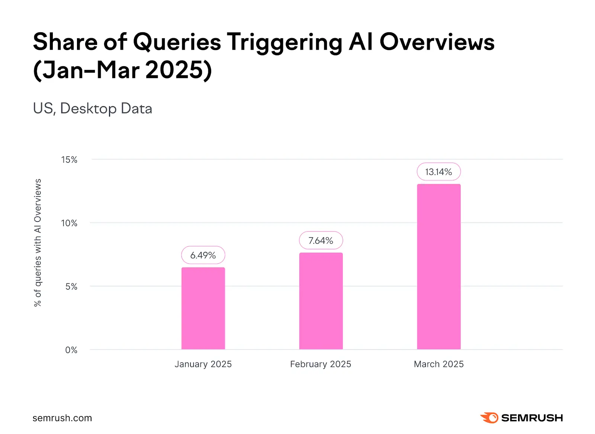

一、核心结论：去AI味的本质是恢复人的判断
官网文章去掉AI味道，不是把句子改得更随意，也不是刻意加入口头禅，而是让文章出现真实判断、具体经验、可验证证据和清楚边界。读者感到一篇文章有AI味，往往不是因为它太工整，而是因为它说了很多正确废话。
真正有价值的官网内容应该能回答三个问题：作者为什么这样判断，读者在什么场景可以使用，哪些条件下不适用。只要这三个问题没有答案，文章再像真人说话，也仍然显得空。
二、AI味道最常见的五个表现

AI味道通常不是单个词造成的，而是一组文本习惯叠加出来的结果。比如每节都先说“很重要”，再列三点优势，最后用“总之”收尾。这种结构没有明显错误，却会让读者感到没有新信息。
官网文章尤其容易出现这种问题，因为它常常既想做SEO，又想显得专业，还想覆盖很多关键词。结果文章没有明确对象、没有行业现场、没有真实取舍，只剩下抽象的通用建议。
- 开头绕很久才进入结论，读者看不出作者立场。
- 大量使用“至关重要、赋能、全面提升”等抽象词。
- 每个行业、每家公司都可以套用，缺少具体场景。
- 只写优点，不写限制、成本、例外和失败条件。
- FAQ回答短而泛，像把正文标题重新说了一遍。
三、第一步：把空泛开头改成可引用结论
官网文章最需要先改的是开头。很多AI味文章喜欢用背景铺垫，比如“随着数字化时代的发展，企业越来越重视内容建设”。这类句子安全，但没有判断，也不会帮助搜索引擎或AI理解页面到底回答什么问题。
更好的开头应该直接给结论，然后说明为什么这个结论成立。例如写“去AI味不是降低机器痕迹，而是提升经验密度”，这句话本身就能被引用，也能迫使后文围绕经验密度展开，而不是继续写空泛建议。
四、第二步：用经验细节替换模板句
模板句的特点是无法证明作者真的经历过这个问题。比如“企业应结合自身情况制定内容策略”，这句话永远正确，却没有告诉读者如何结合。经验细节则会给出对象、动作、冲突和判断标准。
编辑时可以逐句追问：这句话是否能换成任何行业都成立？如果可以，就要补充业务场景。它是否只有建议没有例子？如果是，就要补一个真实编辑动作、客户问题或页面类型。
| 模板句 | 更像真人的改法 | 原因 |
|---|---|---|
| 要重视内容质量 | 先删掉没有新信息的背景段 | 动作更具体 |
| 结合用户需求写作 | 把销售常被问到的问题改成FAQ | 场景更明确 |
| 提升专业度 | 给每个判断补来源、案例或限制 | 证据更可检查 |
| 优化文章结构 | 用表格区分概念，用步骤说明流程 | 结构更可抽取 |